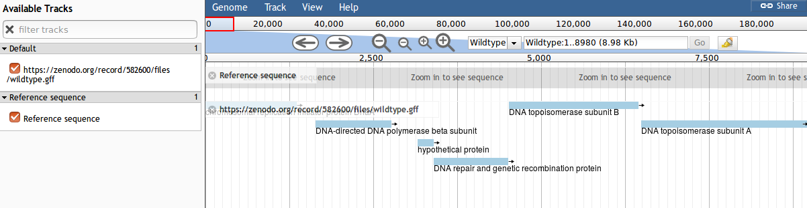
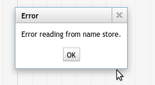
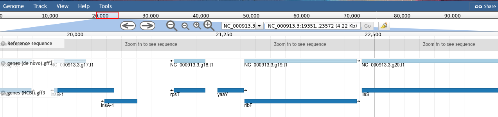
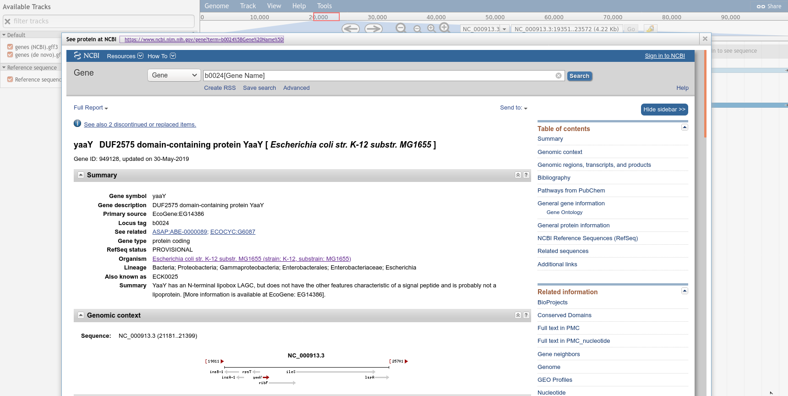
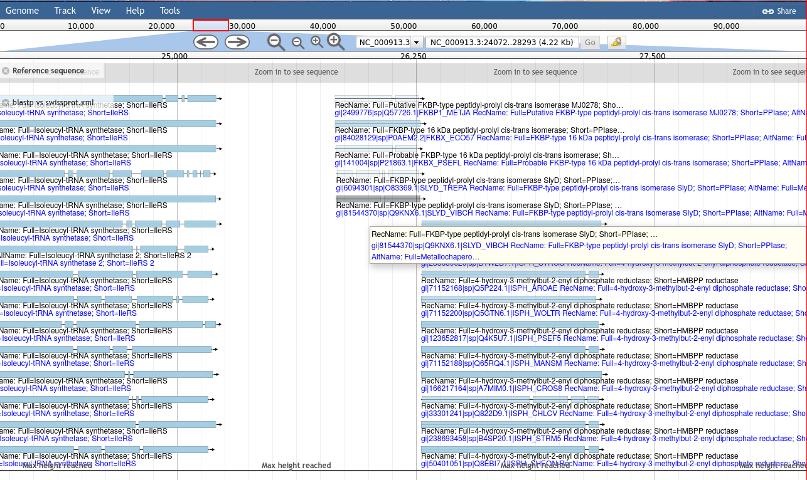

JBrowse (Buels et al. 2016) is a fast, embeddable genome browser built completely with JavaScript
and HTML5, with optional run-once data formatting tools written in Perl.
and executes the “run-once data formatting tools” mentioned in its description. The JBrowse tool has an incredibly extensive number of options, more than anyone needs most of the time. We’ll go through them in detail but feel free to skip the sections that don’t apply to the data types you use. Not everyone has Blast results to visualise. This tutorial also is very hands off, we will give some guidance but it is up to you to explore JBrowse and consider ways in which it can apply to your own data. Unlike other tutorials there is no biological story here, just some ways you can visualise common datatypes.
This tutorial covers version 1.16.5+ of the JBrowse tool, earlier versions will have different behaviour and tool layout.
Open the Galaxy Upload Manager (galaxy-upload on the top-right of the tool panel)
Select Paste/Fetch Data
Paste the link into the text field
Press Start
Close the window
By default, Galaxy uses the URL as the name, so rename the files with a more useful name.
The data for today is a subset of real datasets from E. coli MG1655 strain K-12
Simple Gene Tracks
We will start by adding a couple of gene call tracks. In our case these are genes and gene predictions, but they don’t have to be. In the general case this can be any interesting region from an analysis, where a tool has pointed out some region for further inspection for some reason, then this data can be visualised with the “gene” track type.
hands_on Hands-on: Build the JBrowse
JBrowsetool with the following parameters:
“Reference genome to display”: Use a genome from history
param-file“Select the reference genome”: genome.fa
“Genetic Code”: 11. The Bacterial, Archaeal and Plant Plastid Code
In “Track Group”:
param-repeat“Insert Track Group”
“Track Category”: Genes
In “Annotation Track”:
param-repeat“Insert Annotation Track”
“Track Type”: GFF/GFF3/BED Features
param-file“GFF/GFF3/BED Track Data”: genes (de novo).gff3
Execute
View the contents of the file
Figure 1: Screenshot of JBrowse
tip Error reading from name store

If you see this error message, click OK, this is a known bug.
If you are not familiar with the operation of JBrowse there are some important points:
“Tracks” are shown on the left. Clicking the checkboxes will make the tracks visible or invisible
You can use your mouse scrollwheel to move around the genome view area, or you can click and drag to move.
Double clicking will zoom in on the genome, or you can use the magnifying glass icons to zoom in our out
tip Tip: Naming Tracks
The JBrowse tool takes track names directly from file names
If you want to rename tracks: Click on the pencil icon, edit the Name and click Save.
You can now re-run the JBrowse tool and it will produce a new JBrowse instance with corrected names.
Complex Gene Tracks
All of the track types in the JBrowse tool support a wide array of features. We’ve only looked at a simple track with default options, however there are more tools available to us to help create user-friendly JBrowse instances that can embed rich data.
hands_on Hands-on: Build a JBrowse for viewing Genes
JBrowsetool with the following parameters:
“Reference genome to display”: Use a genome from history
param-file“Select the reference genome”: genome.fa
“Genetic Code”: 11. The Bacterial, Archaeal and Plant Plastid Code
In “Track Group”:
param-repeat“Insert Track Group”
“Track Category”: Genes
In “Annotation Track”:
param-repeat“Insert Annotation Track”
“Track Type”: GFF/GFF3/BED Features
param-file“GFF/GFF3/BED Track Data”: genes (de novo).gff3
“JBrowse Track Type [Advanced]”: Canvas Features
In “JBrowse Feature Score Scaling & Coloring Options [Advanced]”:
“Color Score Algorithm”: Based on score
“How should minimum and maximum values be determined for the scores of the features”: Manually specify minimum and maximum expected scores for the feature track
We’re going to add a “Contextual Menu” which deserves a little explanation first. In JBrowse
terminology the right click menu of some features is called the contextual menus. You can customize
this menu to add new links and options that will be useful to the user. These links can be
templated with variables based on metadata of the feature that the user clicked upon.
There are more valid values for templating than mentioned in the help. When
you click on a feature in the JBrowse instance, it will present all of the
properties of the feature. Any of the top level properties can be used
directly in your templating
Figure 2: Genes visualised in JBrowse. The lighter coloured genes on the denovo track are coloured based on the confidence score given to the prediction by AUGUSTUS. NCBI genes do not have scores, these are more like an official gene set.
Turn on both tracks of data.
Navigate to 21,200, either manually, or by copying and pasting the location block: NC_000913.3:18351..24780
Right click on the yaaY gene, and click the “See protein at NCBI” menu option.
This menu option is dynamic, try it with a few other features from the genes (NCBI).gff3 track. These features have a locus_tag and the menu button we added will open a URL to an NCBI search page for the value of this locus_tag attribute.
Figure 3: The NCBI iframe within JBrowse, you can see how to link to external databases from JBrowse and help the viewer obtain as much information or context as they might need... but you have to build it yourself.
Contextual menus can be used to link to more than just NCBI.
The links can go anywhere such as web search services (e.g. Google) or genomics web services (e.g. EBI)
Some sites use the IFrame action to link genes to local services where users are expected to submit annotation notes or data.
Sequencing, Coverage, and Variation
This is the next major category of data that people wish to visualize: sequencing, coverage, and variation. The sequencing data can be of any type, and does not necessarily need to be sequencing data, as long as the results are formatted as BAM files. Here we will add several coverage tracks (essentially a line plot along the genome, associating a position with a value) with various visualisation options like scaling and display type. Each of these visualisation options can be useful in different situations, but it largely is a matter of preference or what you are used to seeing.
Next we will add a sequencing dataset, a BAM file which maps some sequencing reads against various locations along the genome. JBrowse helpfully highlights which reads have mapping issues, and any changes in bases between the reads and the genome. We “Autogenerate a SNP track”, which produces an extra track we can enable in JBrowse. This track reads the same BAM file used for visualising reads, and then produces a SNP and coverage visualisation. NB: This only works for small BAM files, if your files are large (>200 Mb), then you should consider generating these coverage and SNP tracks by other means (e.g. bamCoverage and FreeBayes or similar tools) as it will be significantly faster. You can learn more about generating these files in the Mapping tutorial.
hands_on Hands-on: Task description
JBrowsetool with the following parameters:
“Reference genome to display”: Use a genome from history
param-file“Select the reference genome”: genome.fa
“Genetic Code”: 11. The Bacterial, Archaeal and Plant Plastid Code
In “Track Group”:
param-repeat“Insert Track Group”
“Track Category”: Coverage
In “Annotation Track”:
param-repeat“Insert Annotation Track”
“Track Type”: BigWig XY
param-file“BigWig Track Data”: dna sequencing coverage.bw
Figure 4: All of the sequencing tracks in JBrowse. Try exploring! There are many menu and configuration options which can help you filter and sort your data.
Try:
Clicking on individual variations in the dedicated variants.vcf track
Hovering over the autogenerated SNPs/Coverage track
Clicking on individual reads of the sequencing.bam track
Changing the visualisation options of the BAM track
Blast Results
The Blast visualisation module requires that you have a gff3 formatted set of features which you then exported as DNA or protein, and blasted. The reason is easy to understand: when you extract DNA/protein sequences for Blasting, this process looses information about where these sequences were along the genome. The results from Blast retains the identifiers from the DNA/protein sequences, so we need to “map” these identifiers, to proper features with locations.
The best way to accomplish this is through the gffread tool which can cleanup a gff3 file, and export various features, optionally translating them. With these outputs, the cleaned features and fasta formatted sequences, you can Blast the sequences, and then supply the resulting Blast XML outputs in addition to the cleaned features, allowing a script to re-associate these Blast results to their original locations along the genome.
hands_on Hands-on: Building a JBrowse for Blast results
JBrowsetool with the following parameters:
“Reference genome to display”: Use a genome from history
param-file“Select the reference genome”: genome.fa
“Genetic Code”: 11. The Bacterial, Archaeal and Plant Plastid Code
In “Track Group”:
param-repeat“Insert Track Group”
In “Annotation Track”:
param-repeat“Insert Annotation Track”
“Track Type”: Blast XML
param-file“BlastXML Track Data”: blastp vs swissprot.xml
param-file“Features used in Blast Search”: blastp genes.gff3
“Minimum Gap Size”: 5
“Is this a protein blast search?”: Yes
In “JBrowse Feature Score Scaling & Coloring Options [Advanced]”:
Figure 5: Blast results, coloured according to their e-value. This sort of track is commonly used to help genome annotators have additional genomic context when they are annotating.
Conclusion
This does not exhaustively cover JBrowse, and the tool is more extensible than can be easily documented, but hopefully these examples are illustrative and can give you some ideas about your next steps.
keypoints Key points
This tutorial can not exhaustively cover every data type, but maybe it provides inspiration for your own analyses
JBrowse is a great, workflow-compatible alternative to other genome browsers
You can build visualisations that summarise dozens of analyses in one visualisation
References
Buels, R., E. Yao, C. M. Diesh, R. D. Hayes, M. Munoz-Torres et al., 2016 JBrowse: a dynamic web platform for genome visualization and analysis. Genome Biology 17:10.1186/s13059-016-0924-1
Feedback
Did you use this material as an instructor? Feel free to give us feedback on how it went.
Batut et al., 2018 Community-Driven Data Analysis Training for Biology Cell Systems 10.1016/j.cels.2018.05.012
details BibTeX
@misc{visualisation-jbrowse,
author = "Helena Rasche and Saskia Hiltemann",
title = "Genomic Data Visualisation with JBrowse (Galaxy Training Materials)",
year = "2021",
month = "01",
day = "06"
url = "\url{/training-material/topics/visualisation/tutorials/jbrowse/tutorial.html}",
note = "[Online; accessed TODAY]"
}
@article{Batut_2018,
doi = {10.1016/j.cels.2018.05.012},
url = {https://doi.org/10.1016%2Fj.cels.2018.05.012},
year = 2018,
month = {jun},
publisher = {Elsevier {BV}},
volume = {6},
number = {6},
pages = {752--758.e1},
author = {B{\'{e}}r{\'{e}}nice Batut and Saskia Hiltemann and Andrea Bagnacani and Dannon Baker and Vivek Bhardwaj and Clemens Blank and Anthony Bretaudeau and Loraine Brillet-Gu{\'{e}}guen and Martin {\v{C}}ech and John Chilton and Dave Clements and Olivia Doppelt-Azeroual and Anika Erxleben and Mallory Ann Freeberg and Simon Gladman and Youri Hoogstrate and Hans-Rudolf Hotz and Torsten Houwaart and Pratik Jagtap and Delphine Larivi{\`{e}}re and Gildas Le Corguill{\'{e}} and Thomas Manke and Fabien Mareuil and Fidel Ram{\'{\i}}rez and Devon Ryan and Florian Christoph Sigloch and Nicola Soranzo and Joachim Wolff and Pavankumar Videm and Markus Wolfien and Aisanjiang Wubuli and Dilmurat Yusuf and James Taylor and Rolf Backofen and Anton Nekrutenko and Björn Grüning},
title = {Community-Driven Data Analysis Training for Biology},
journal = {Cell Systems}
}
congratulations Congratulations on successfully completing this tutorial!
 Helena Rasche
Helena Rasche Saskia Hiltemann
Saskia Hiltemann